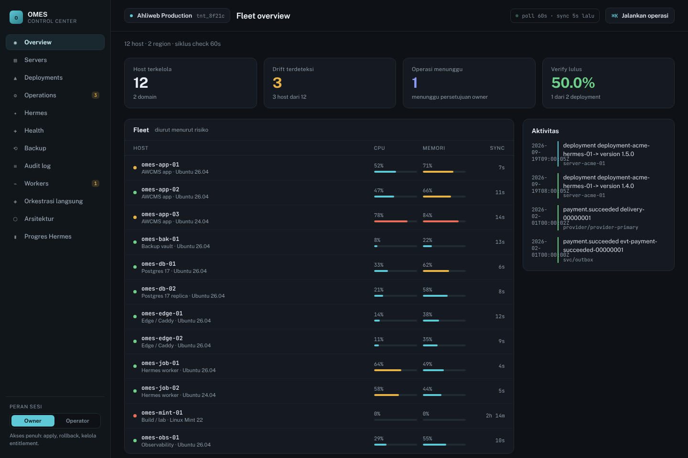
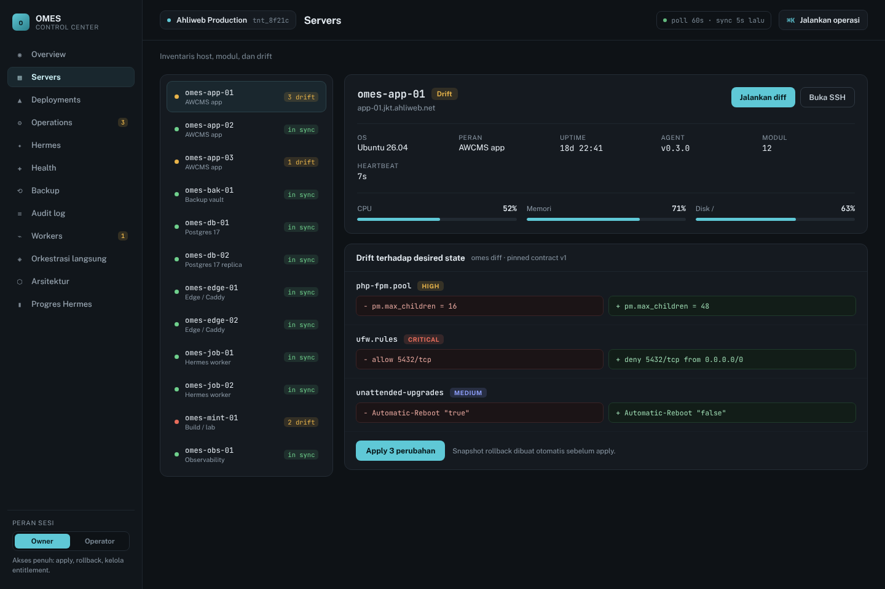
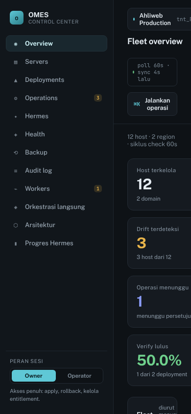

Audit UX prototipe Control Center v2: kuat di fondasi, lemah di kejujuran data dan keamanan interaksi
Prototipe referensi satu berkas (1.260 baris, 12 layar) untuk konsol multi-tenant AWCMS + OMES. Dirender ulang pada 1440×960 dan 390×844, lalu dibandingkan dengan dokumen desain sendiri (ui-ux-design-system.md §7–§9) dan ADR-0027.
Kritis4melanggar aturan proyek sendiri
Tinggi6menyesatkan keputusan operator
Sedang5memperlambat atau membingungkan
Rendah2polesan
Kondisi saat ini, dengan penanda temuan

33795461116
Fleet overview, 1440×960

1274
Servers & drift, 1440×960

8
390×844
Yang sudah baik — pertahankan
Data dihasilkan dari fixture kontrak v1, dicek kesegarannya di CI